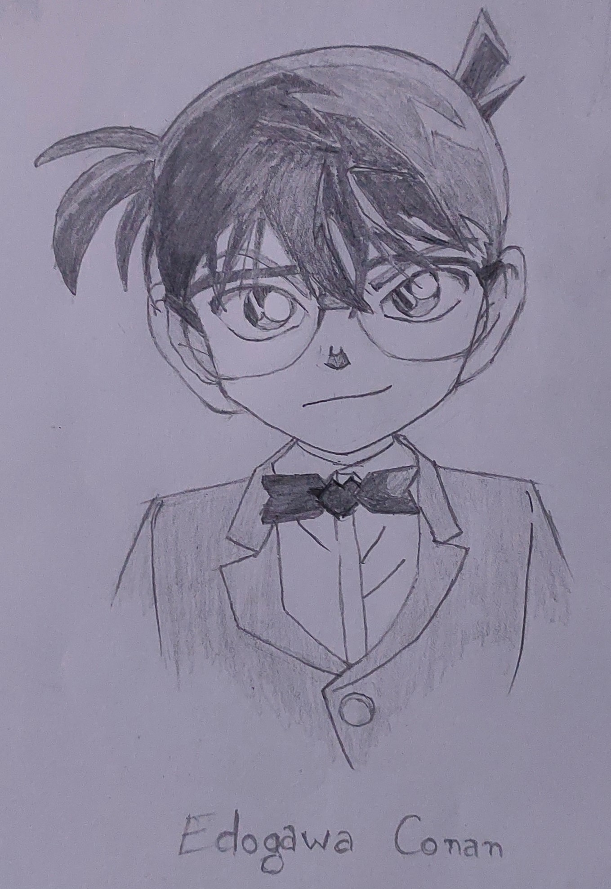
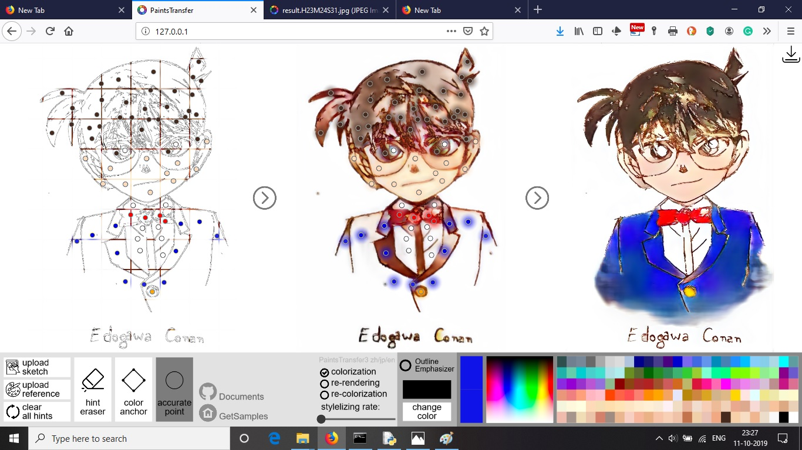
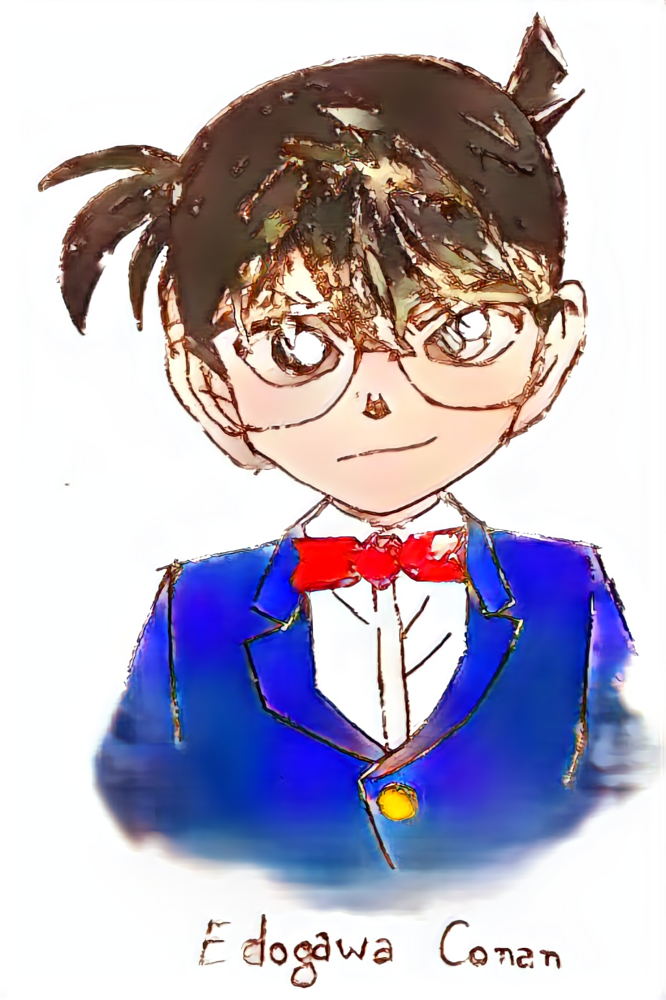
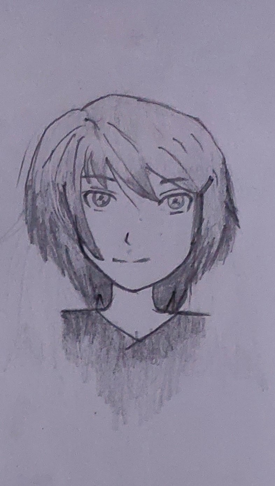
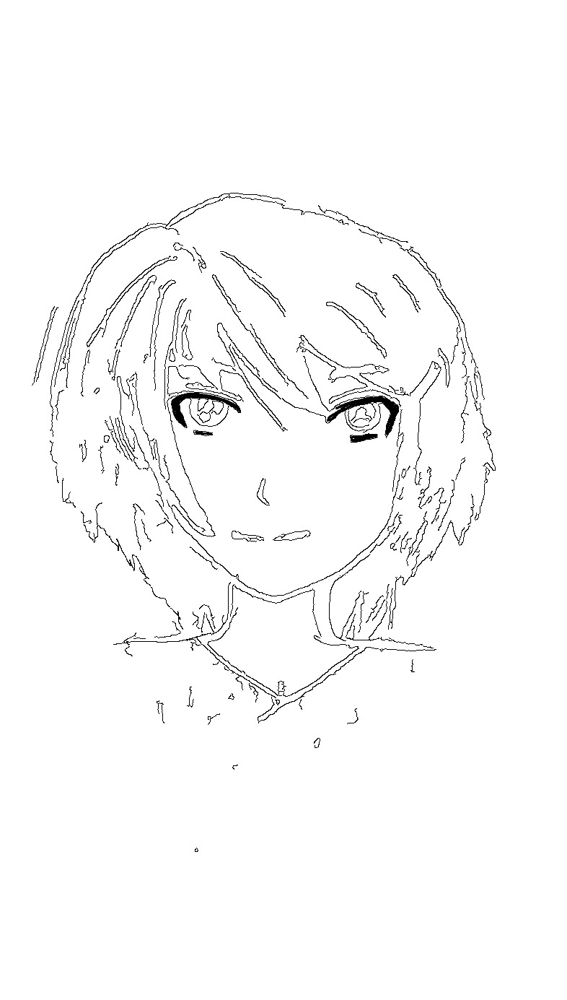
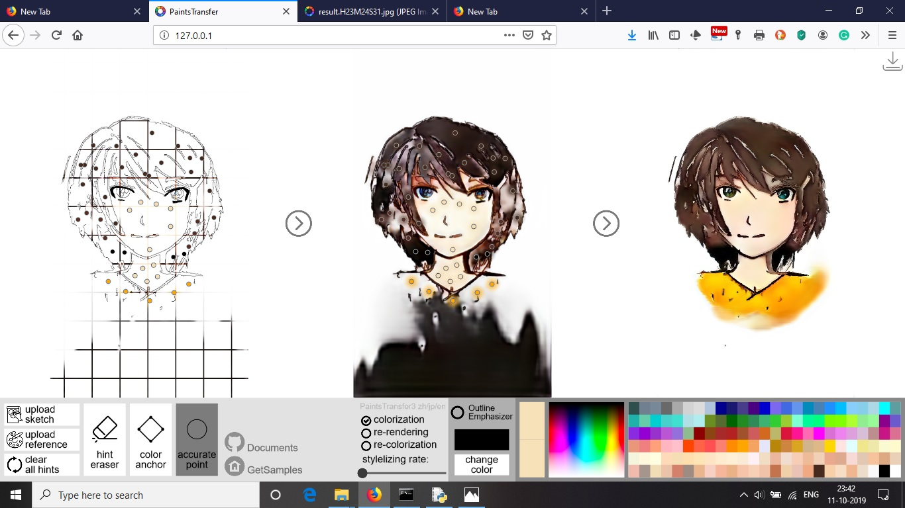

Here are some pencil sketches converted to colored drawings using ai.First the sketches were done. Then the following steps were followed:
- Capture the pencil sketches using camera.
- Run line detection on the images.
- Run stylestopaint on the image giving hints for coloring
- Save your result
1st example:
- 

- 
- 
2nd example:
- 
- 
- 